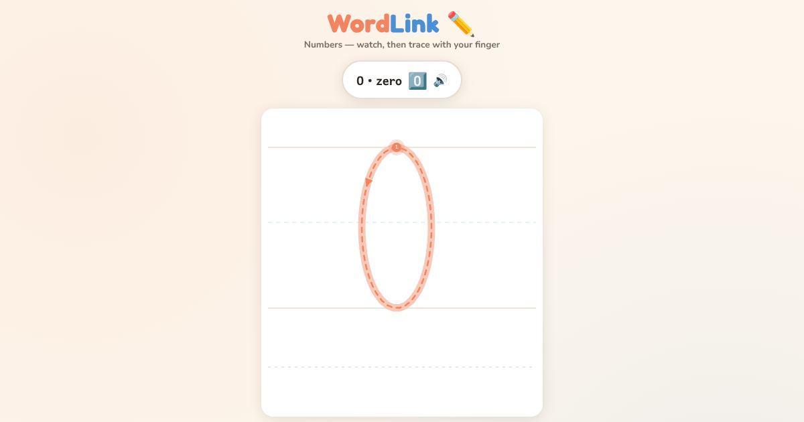

For teachers and tutors
About Trace the Numbers with Your Finger
Number tracing for adults who are learning to write numbers in the English way. Many learners already count and use money but write numbers in another script, or have never held a pen. The learner hears the number name, such as "seven", watches the number being written, then traces it with a finger from the start dot. All ten numbers from 0 to 9 are included, so the learner can write a phone number, a date or an amount on a form.

How to use it
- Open the page and choose a number.
- Listen to its name and watch how it is written.
- Put your finger on the start dot and trace it.
- Write the number on paper.
Use it in a class
Use it before writing phone numbers, dates of birth and prices. Ask students to trace each number, then write their own phone number on paper. The Write the Number and Tap the Number games give more practice with the same numbers.